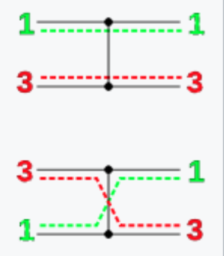

Petersen ICML’21 Differentiable Sorting Networks for Scalable Sorting and Ranking Supervision¶
https://arxiv.org/abs/2105.04019
著者
Felix Petersen (University of Konstanz)
Christian Borgelt (University of Salzburg)
Hilde Kuehne (University of Frankfurt, MIT-IBM Watson AI)
Oliver Deussen (University of Konstanz)
概要¶
sorting networkはワイヤーとコンパレーターで構成され(どの要素とどの要素の大小比較をしてswapするかを指定する)、それどおりに実行するとsortされる。
コンパレーターはmin, maxなので微分できないが、それをsigmoidを使って代替することで微分可能にする。
前置き¶
sorting network
https://en.wikipedia.org/wiki/Sorting_network
{kind=link}
横の棒がワイヤーで左から右に値を伝搬する
●と縦の棒がコンパレーターで繋がれたところに流れてきた値を比較して、上の値>=下の値ならそのまま、そうでなければスワップする
つまり 上の値を \(x\) , 下の値を \(y\) としてコンパレーター通した上と下の値はそれぞれ \(\min(x, y), \max(x, y)\) になる

この論文で出てくる odd-even sort, bitonic sort は深さが \(\mathcal{O}(\log^2 n)\) なのでサイズは \(\mathcal{O}(n \log^2 n)\)
{kind=link}

AKS sortは深さが \(\mathcal{O}(\log n)\) だが、定数部分が大きくて使い物にならないらしい
Differentiable Sorting Networks¶
minとmaxを以下のように緩和する
この論文では \(f\) はsigmoid関数 ( \(f(x) = 1 / (1+\exp(-sx))\) ) としている。
\(s\) は steepness hyperparameterで \(s\rightarrow \infty\) にするとmin, maxになる。
import math
def sofmin(f, a, b):
return a * f(b-a) + b * f(a-b)
def sofmax(f, a, b):
return a * f(a-b) + b * f(b-a)
def f_sigmoid(x):
s = 10.0
return 1. / (1. + math.exp(-s*x))
a, b = 1, 2
for a, b in [(1,2), (1.111, 1.112),]:
print(f"(a, b) = ({a}, {b})")
print(
"softmin(a, b) =", sofmin(f_sigmoid, a, b),
", softmax(a, b) =", sofmax(f_sigmoid, a, b),
)
(a, b) = (1, 2)
softmin(a, b) = 1.0000453978687025 , softmax(a, b) = 1.9999546021312977
(a, b) = (1.111, 1.112)
softmin(a, b) = 1.1114975000208331 , softmax(a, b) = 1.111502499979167
Activation Replacement Trick¶
2つの問題があるので、値をいじる。
\(|a-b|\) が0に近いと勾配が大きくなりすぎて、大きく動きすぎてしまう。
逆に \(|a-b|\) が大きすぎると勾配が消失する。
なので、\(\varphi(x) = x / (|x|^\lambda + \epsilon), ~~ (\lambda \in [0, 1])\) を \(f\) の前に挟んで、 正の値は+1, 負の値は-1に近づけるようにする

Differentiable Permutation Matrices¶
各レイヤーのpermutation matrixは、まず単位行列で初期化し、指定要素の値を次のようにする
relaxed permutation matrixは以下のようになる
sorting networkのwikipediaにある4入力のnetworkで確認してみる。

import torch
def f(x):
s = 10.0
return 1. / (1. + torch.exp(-s*x))
def get_pm(x, ij_list):
n = x.shape[0]
P = torch.eye(n, dtype=x.dtype)
for i, j in ij_list:
alpha_ij = f(x[j] - x[i])
P[i, i] = alpha_ij
P[j, j] = alpha_ij
P[i, j] = 1 - alpha_ij
P[j, i] = 1 - alpha_ij
return P
def mprint(*args):
for x in args:
print(x)
x = torch.tensor([3, 2, 4, 1], dtype=torch.float32)
# layer1
P1 = get_pm(x, ij_list=[(0, 2), (1,3)])
P = P1
sx = P @ x
mprint(sx, P, P.sum())
tensor([3.0000, 1.0000, 4.0000, 2.0000])
tensor([[9.9995e-01, 0.0000e+00, 4.5419e-05, 0.0000e+00],
[0.0000e+00, 4.5398e-05, 0.0000e+00, 9.9995e-01],
[4.5419e-05, 0.0000e+00, 9.9995e-01, 0.0000e+00],
[0.0000e+00, 9.9995e-01, 0.0000e+00, 4.5398e-05]])
tensor(4.)
# layer2
P2 = get_pm(sx, ij_list=[(0, 1), (2,3)])
P = torch.matmul(P2.T, P1.T)
sx = P @ x
mprint(sx, P, P.sum())
tensor([1.0000, 3.0000, 2.0000, 4.0000])
tensor([[2.0611e-09, 4.5398e-05, 9.3615e-14, 9.9995e-01],
[9.9995e-01, 9.3572e-14, 4.5419e-05, 2.0611e-09],
[9.3615e-14, 9.9995e-01, 2.0611e-09, 4.5398e-05],
[4.5419e-05, 2.0611e-09, 9.9995e-01, 9.3572e-14]])
tensor(4.)
# layer3
P3 = get_pm(sx, ij_list=[(1, 2)])
P = torch.matmul(P3.T, torch.matmul(P2.T, P1.T))
sx = P @ x
mprint(sx, P, P.sum())
tensor([1.0000, 2.0000, 3.0000, 4.0000])
tensor([[2.0611e-09, 4.5398e-05, 9.3615e-14, 9.9995e-01],
[4.5355e-05, 9.9991e-01, 4.1210e-09, 4.5396e-05],
[9.9991e-01, 4.5355e-05, 4.5417e-05, 4.1201e-09],
[4.5419e-05, 2.0611e-09, 9.9995e-01, 9.3572e-14]])
tensor(4.)
著者によるpytorch実装¶
https://github.com/Felix-Petersen/diffsort
# https://github.com/Felix-Petersen/diffsort
import math
from typing import List, Tuple
import torch
import numpy as np
def odd_even_network(n):
layers = n
network = []
shifted: bool = False
even: bool = n % 2 == 0
for layer in range(layers):
if even:
k = n // 2 + shifted
else:
k = n // 2 + 1
split_a, split_b = np.zeros((k, n)), np.zeros((k, n))
combine_min, combine_max = np.zeros((n, k)), np.zeros((n, k))
count = 0
# for i in range(n // 2 if not (even and shifted) else n // 2 - 1):
for i in range(int(shifted), n-1, 2):
a, b = i, i + 1
split_a[count, a], split_b[count, b] = 1, 1
combine_min[a, count], combine_max[b, count] = 1, 1
count += 1
if even and shifted:
# Make sure that the corner values stay where they are/were:
a, b = 0, 0
split_a[count, a], split_b[count, b] = 1, 1
combine_min[a, count], combine_max[b, count] = .5, .5
count += 1
a, b = n - 1, n - 1
split_a[count, a], split_b[count, b] = 1, 1
combine_min[a, count], combine_max[b, count] = .5, .5
count += 1
elif not even:
if shifted:
a, b = 0, 0
else:
a, b = n - 1, n - 1
split_a[count, a], split_b[count, b] = 1, 1
combine_min[a, count], combine_max[b, count] = .5, .5
count += 1
assert count == k
network.append((split_a, split_b, combine_min, combine_max))
shifted = not shifted
return network
def get_sorting_network(type, n, device):
def matrix_to_torch(m):
return [[torch.from_numpy(matrix).float().to(device) for matrix in matrix_set] for matrix_set in m]
if type == 'odd_even':
return matrix_to_torch(odd_even_network(n))
else:
raise NotImplementedError('Sorting network `{}` unknown.'.format(type))
SORTING_NETWORK_TYPE = List[torch.tensor]
def s_best(x):
return torch.clamp(x, -0.25, 0.25) + .5 + \
((x > 0.25).float() - (x < -0.25).float()) * (0.25 - 1/16/(x.abs()+1e-10))
class NormalCDF(torch.autograd.Function):
def forward(ctx, x, sigma):
ctx.save_for_backward(x, torch.tensor(sigma))
return 0.5 + 0.5 * torch.erf(x / sigma / math.sqrt(2))
def backward(ctx, grad_y):
x, sigma = ctx.saved_tensors
return grad_y * 1 / sigma / math.sqrt(math.pi * 2) * torch.exp(-0.5 * (x/sigma).pow(2)), None
def execute_sort(
sorting_network,
vectors,
steepness=10.,
art_lambda=0.25,
distribution='cauchy'
):
x = vectors
X = torch.eye(vectors.shape[1], dtype=x.dtype, device=x.device).repeat(x.shape[0], 1, 1)
for split_a, split_b, combine_min, combine_max in sorting_network:
split_a = split_a.type(x.dtype)
split_b = split_b.type(x.dtype)
combine_min = combine_min.type(x.dtype)
combine_max = combine_max.type(x.dtype)
a, b = x @ split_a.T, x @ split_b.T
# float conversion necessary as PyTorch doesn't support Half for sigmoid as of 25. August 2021
new_type = torch.float32 if x.dtype == torch.float16 else x.dtype
if distribution == 'logistic':
alpha = torch.sigmoid((b-a).type(new_type) * steepness).type(x.dtype)
elif distribution == 'logistic_phi':
alpha = torch.sigmoid((b-a).type(new_type) * steepness / ((a-b).type(new_type).abs() + 1.e-10).pow(art_lambda)).type(x.dtype)
elif distribution == 'gaussian':
v = (b - a).type(new_type)
alpha = NormalCDF.apply(v, 1 / steepness)
alpha = alpha.type(x.dtype)
elif distribution == 'reciprocal':
v = steepness * (b - a).type(new_type)
alpha = 0.5 * (v / (2 + v.abs()) + 1)
alpha = alpha.type(x.dtype)
elif distribution == 'cauchy':
v = steepness * (b - a).type(new_type)
alpha = 1 / math.pi * torch.atan(v) + .5
alpha = alpha.type(x.dtype)
elif distribution == 'optimal':
v = steepness * (b - a).type(new_type)
alpha = s_best(v)
alpha = alpha.type(x.dtype)
else:
raise NotImplementedError('softmax method `{}` unknown'.format(distribution))
aX = X @ split_a.T
bX = X @ split_b.T
w_min = alpha.unsqueeze(-2) * aX + (1-alpha).unsqueeze(-2) * bX
w_max = (1-alpha).unsqueeze(-2) * aX + alpha.unsqueeze(-2) * bX
X = (w_max @ combine_max.T.unsqueeze(-3)) + (w_min @ combine_min.T.unsqueeze(-3))
x = (alpha * a + (1-alpha) * b) @ combine_min.T + ((1-alpha) * a + alpha * b) @ combine_max.T
return x, X
def sort(
sorting_network: SORTING_NETWORK_TYPE,
vectors: torch.Tensor,
steepness: float = 10.0,
art_lambda: float = 0.25,
distribution: str = 'cauchy'
) -> Tuple[torch.Tensor, torch.Tensor]:
return execute_sort(
sorting_network=sorting_network,
vectors=vectors,
steepness=steepness,
art_lambda=art_lambda,
distribution=distribution
)
x = torch.FloatTensor([
[6.5, 0.4, 1.5, 3.8,],
[3.5, 9.2, 2.4, 0.8,]
])
sn = get_sorting_network('odd_even', x.shape[1], 'cpu')
def check(distribution):
sx, pm = execute_sort(sn, x, distribution=distribution)
b_hat = torch.arange(1, x.shape[1] + 1, dtype=x.dtype).repeat(x.shape[0], 1).unsqueeze(2)
sr = torch.matmul(pm, b_hat)[...,0]
print("x =", x)
print("sort(x) =", sx)
print("rank(x) =", sr)
check("logistic")
x = tensor([[6.5000, 0.4000, 1.5000, 3.8000],
[3.5000, 9.2000, 2.4000, 0.8000]])
sort(x) = tensor([[0.4000, 1.5000, 3.8000, 6.5000],
[0.8000, 2.4000, 3.5000, 9.2000]])
rank(x) = tensor([[4.0000, 1.0000, 2.0000, 3.0000],
[3.0000, 4.0000, 2.0000, 1.0000]])
check("logistic_phi")
x = tensor([[6.5000, 0.4000, 1.5000, 3.8000],
[3.5000, 9.2000, 2.4000, 0.8000]])
sort(x) = tensor([[0.4000, 1.5000, 3.8000, 6.5000],
[0.8000, 2.4000, 3.5000, 9.2000]])
rank(x) = tensor([[4.0000, 1.0000, 2.0000, 3.0000],
[3.0000, 4.0000, 2.0000, 1.0000]])
check("cauchy")
x = tensor([[6.5000, 0.4000, 1.5000, 3.8000],
[3.5000, 9.2000, 2.4000, 0.8000]])
sort(x) = tensor([[0.4636, 1.5637, 3.7682, 6.4045],
[0.8954, 2.4318, 3.4683, 9.1045]])
rank(x) = tensor([[3.9596, 1.0438, 2.0123, 2.9842],
[2.9534, 3.9736, 2.0182, 1.0548]])